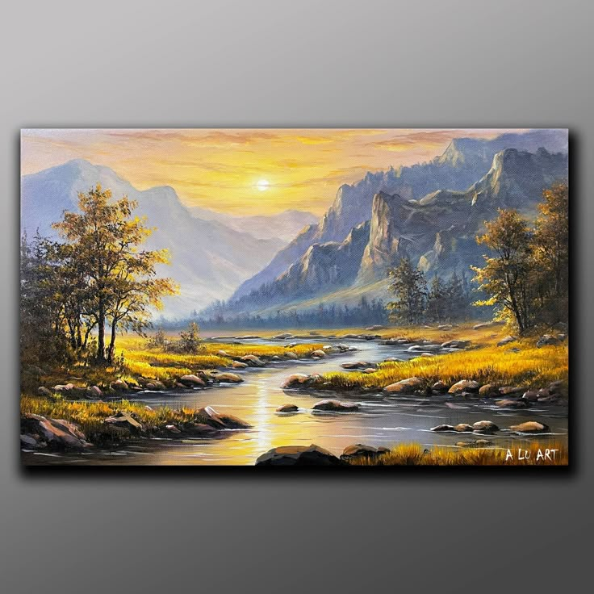

Kecerdasan buatan (AI) telah merevolusi berbagai bidang, termasuk dunia seni. AI kini bukan hanya alat bantu, tetapi juga mitra kreatif yang membuka peluang baru dalam penciptaan karya inovatif dan inspiratif.
Teknik AI dalam Seni
AI dalam seni memanfaatkan Generative Adversarial Networks (GANs) untuk meniru gaya seniman, style-transfer, sampai model NLP yang membuat lukisan digital makin ekspresif. Berbagai tool membantu seniman dari pengolahan gambar hingga sintesis musik otomatis.
Kolaborasi Manusia dan AI
Seniman memberikan data, ide, dan inspirasi; AI menawarkan variasi dan visualisasi cepat. Kolaborasi ini memperluas spektrum ekspresi di luar teknik konvensional.

Kontroversi dan Etika
Apakah karya AI pantas disebut seni sejati? Perdebatan hak cipta, keaslian, dan nilai artistik masih berlangsung—siapa pencipta sesungguhnya: mesin, pengembang, atau penyedia data?
AI dalam Musik dan Suara
Platform seperti Amper Music dan AIVA membuat komposisi otomatis untuk film dan iklan, bahkan menyesuaikan mood yang diinginkan pengguna untuk pengalaman audio personal.
Masa Depan AI & Seni
AI tidak menggantikan seniman, tetapi memperluas kemungkinan. Seni menjadi lebih inklusif, terjangkau, dan terbuka untuk eksplorasi kreatif yang tak terbatas.